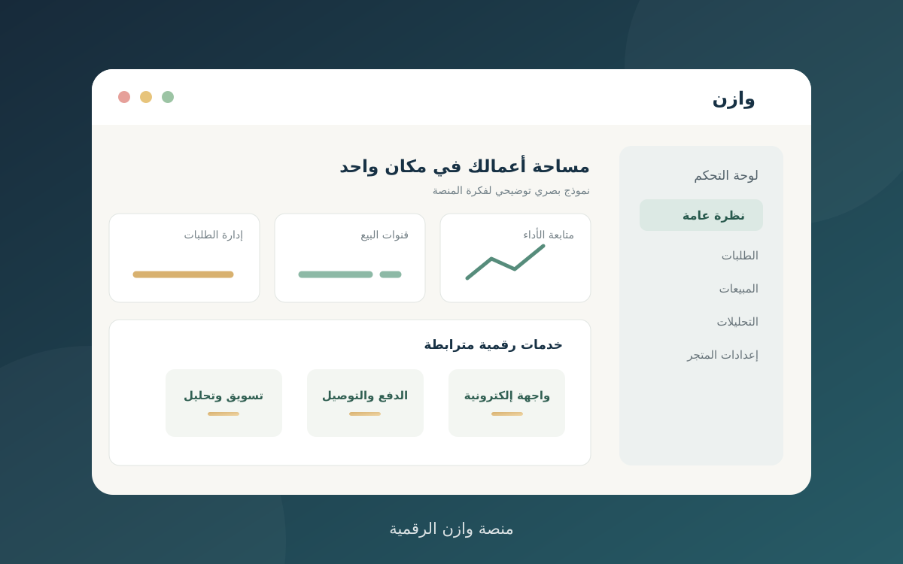
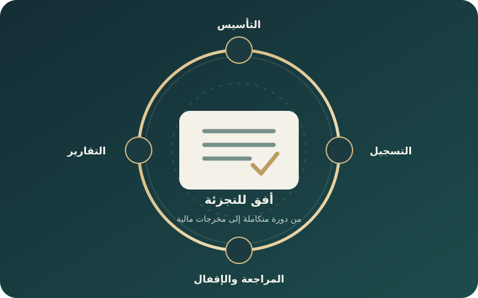
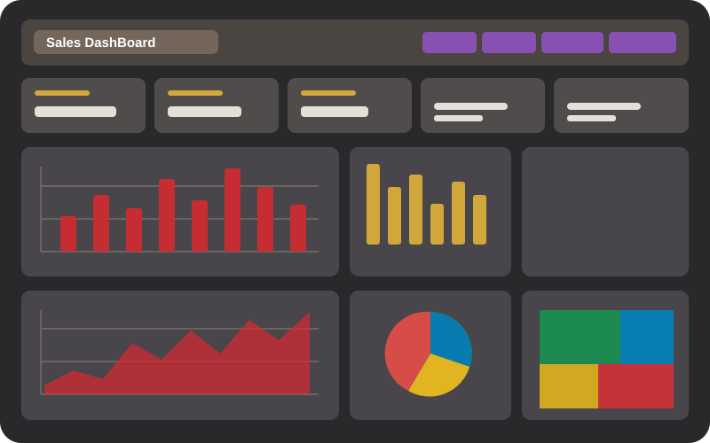
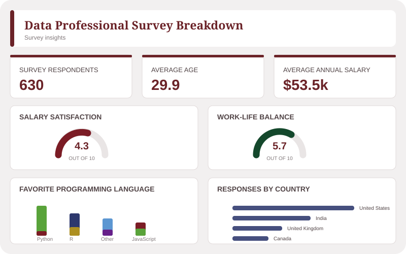

TOTAL SALES
—
تستعرض هذه الصفحة مجموعة من المشاريع والتطبيقات العملية التي تعكس توظيف المعرفة المالية ومهارات التحليل في دراسة المشكلات، وتقييم الفرص، واستخلاص النتائج من البيانات. ويتضمن كل مشروع نبذة عن فكرته، ومنهجيته، والأدوات المستخدمة، وأبرز مخرجاته، بما يوضح الجانب التطبيقي من المهارات المالية والتحليلية.

مشروع تطبيقي
منصة رقمية متكاملة تستهدف المطاعم والمقاهي والمنشآت الصغيرة والمتوسطة، وتدعم حضورها الرقمي وإدارة الطلبات وربط البيع بخدمات الدفع والتوصيل.
مجالات العمل: دراسة الجدوى الاقتصادية والتحليل المالي باستخدام Excel.

محاسبة تطبيقية | قيادة فريق
محاكاة عملية لدورة محاسبية متكاملة؛ قدت فيها الفريق وأسهمت في تأسيس النظام، ومعالجة الحسابات، ومراجعة المخرجات حتى إعداد الإقرار ورفع القوائم.
الإنجاز: تقييم 93٪ | ضمن أفضل خمسة مشاريع/شركات مشاركة.

تحليل بيانات | لوحة تفاعلية
تحليل تفاعلي للمبيعات يتيح متابعة الأداء حسب الفترة والمنتج والفئة ونوع البيع وطريقة الدفع.
الأدوات: Excel، PivotTables، ومؤشرات أداء تفاعلية.

تحليل استبيان | لوحة تفاعلية
استكشاف مرئي لإجابات متخصصي البيانات بحسب المسمى الوظيفي والبلد واللغة المفضلة، مع مؤشرات العمر والراتب والرضا المهني.
مجالات التحليل: تحليل إجابات الاستبيان، المقارنات المهنية، وتصميم مؤشرات تفاعلية.
تحليل بيانات | تطبيق تفاعلي
تعرض البيانات المتاحة المبيعات والإيرادات والتكلفة والربح والكميات، موزعة حسب الأشهر والأيام والمنتجات والفئات ونوع البيع وطريقة الدفع. تساعد المحددات على متابعة الأداء ومقارنة النتائج بين الفترات والفئات، والتعرّف على المنتجات والفئات الأعلى والأقل أداءً لدعم القرارات. لا تتضمن البيانات المتاحة بُعدًا جغرافيًا للمناطق.
Sales Dashboard
—
—
—
—
—
Excel: PivotTables ومحددات البيانات لتحليل المبيعات حسب الوقت والمنتج والفئة ونوع البيع وطريقة الدفع.
التحليل: متابعة الإيرادات والأرباح والكميات ومقارنة أداء المنتجات والفئات عبر الفترات.
تحليل استبيان | لوحة تفاعلية
يستكشف هذا العرض 630 استجابة مجمّعة عن المسميات الوظيفية في مجال البيانات، والبلد، ولغة البرمجة المفضّلة، والعمر، والراتب السنوي بالدولار، والرضا عن الراتب وتوازن العمل والحياة. يتيح اختيار المسمى الوظيفي مقارنة هذه المؤشرات والاطلاع على التوزيعات المهنية، بما يساعد على فهم اتجاهات العينة دون عرض بيانات المشاركين الفردية. هذا تصور تفاعلي مستقل مستلهم من محتوى التقرير، وليس تقرير Power BI الأصلي.
Survey insights
—
—
—
US$ thousandsValues are aggregated; groups with fewer than 10 responses are not shown in subgroup charts. Salary is shown in thousands of US dollars.